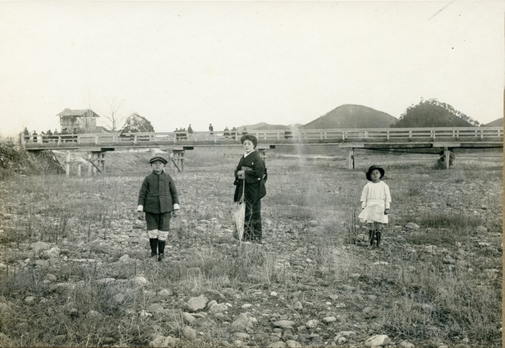
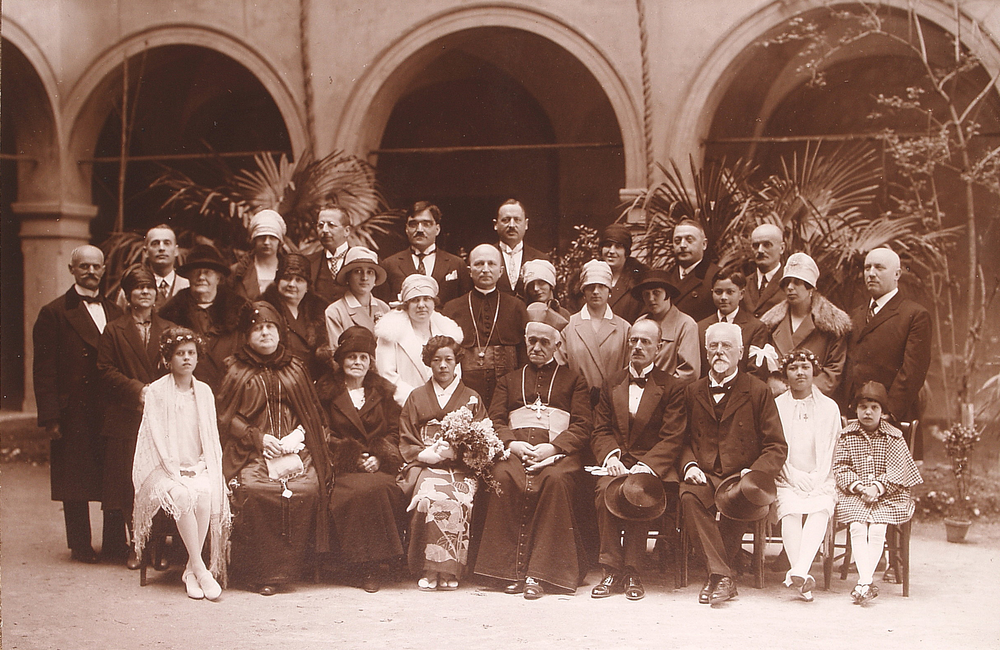
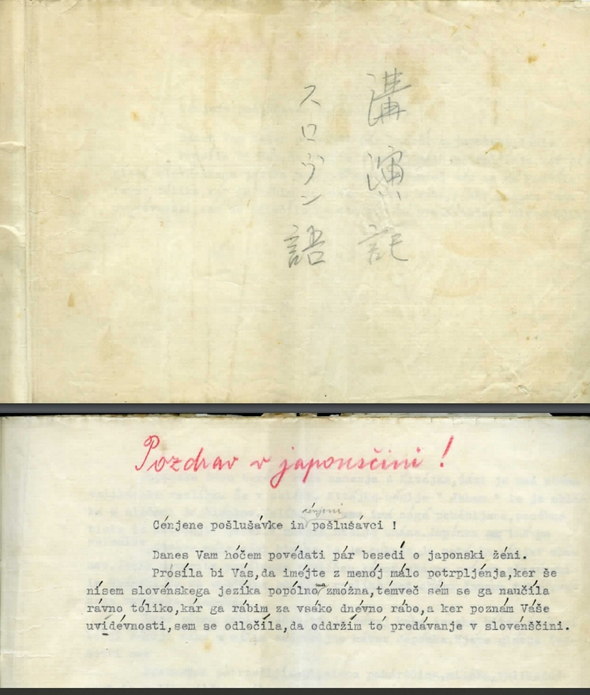
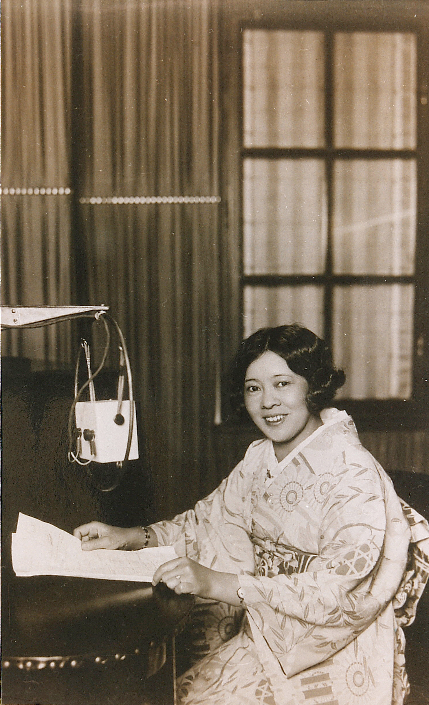
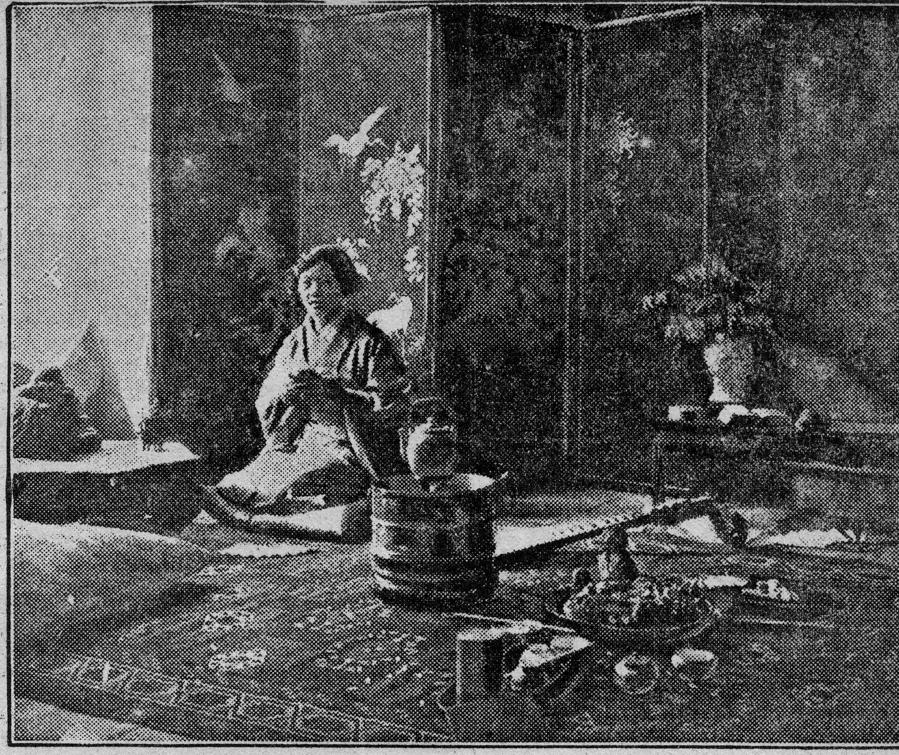
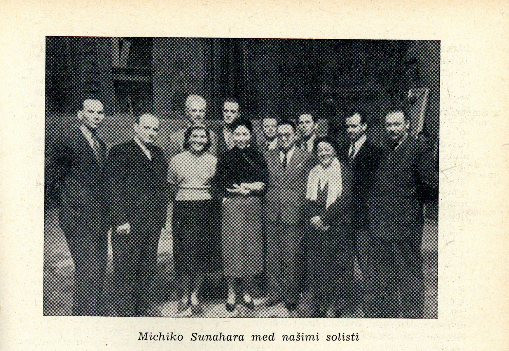

1Tsuneko Kondō Kawase, kasneje uradno Marija Skušek, je bila po preselitvi v Ljubljano leta 1920 prva promotorica japonske kulture na Slovenskem in številni so jo poznali kot »ljubljansko Japonko«. Naučila se je slovenščine in je imela v tridesetih letih 20. stoletja v številnih mestih veliko predavanj o Japonski, japonski ženi in navadah Japoncev. Za pomoč so jo prosile kulturne ustanove, ki so predstavljale Daljni vzhod. Za razstave je posojala predmete iz zbirke, ki sta jo imela z možem, in na razstavah tudi razlagala posebnosti razstavljenih eksponatov. Opernim ustvarjalcem je svetovala ob pripravah na izvedbo Puccinijeve Madama Butterfly v Ljubljani. Ko so v Slovenijo prihajali predstavniki z Japonske, je bila Marija Tsuneko Skušek običajno povabljena za prevajalko. Zadnja leta življenja je urejala domačo zbirko večinoma kitajskih in japonskih predmetov in sodelovala pri pripravi razstav v osrednjih slovenskih muzejih, ki so bile odprte kmalu po njeni smrti.
2Ključne besede: Marija Tsuneko Kondō Kawase Skušek, kulturna promocija, predavanja o Japonski, Madama Butterfly, razstave o Daljnem vzhodu
1After moving to Ljubljana in 1920, Tsuneko Kondō Kawase, later officially Marija Skušek, was the first promoter of Japanese culture in Slovenia, and many knew her as the “Ljubljana’s Japanese woman”. She learned Slovenian and lectured on Japan, Japanese women, and Japanese customs in many cities in the 1930s. Cultural institutions representing the Far East would ask her for help. She would lend objects from the collection she and her husband owned for exhibitions and explain the particular features of the exhibits on display. She advised the producers during the preparations for the performance of Puccini’s opera Madama Butterfly in Ljubljana. When representatives from Japan visited Slovenia, Marija Tsuneko Skušek was usually invited as a translator. During the last years of her life, she worked on her domestic collection of mostly Chinese and Japanese artefacts and participated in the preparation of exhibitions in the central Slovenian museums, which opened shortly after her death.
2Keywords: Marija Tsuneko Kondō Kawase Skušek, cultural promotion, lectures on Japan, opera Madama Butterfly, exhibitions on the Far East
1Marija Tsuneko Kondō Kawase Skušek je bila prva velika promotorica japonske kulture na Slovenskem. V Ljubljano je prišla leta 1920, ko je bilo za Slovenke in Slovence vse v zvezi z Japonsko še zelo daleč, večinoma nepoznano in še dosti bolj nerazumljivo,1 zato tudi ni presenetljivo, da je bil njen japonski priimek v slovenskem časopisju zapisan na zelo različne načine. Že dejstvo, da je imela dva japonska priimka, je bilo nenavadno, pa še ta sta bila bolj poredko zapisana po japonsko, kot Kondō ali Kawase, bolj običajno pa v slovenskemu pisanju prijaznejših oblikah Kondo in Kavase. Priimek Kondō naj bi dobila od očima, s katerim naj bi živela pred prvo svetovno vojno in naj bi bil vnet zbiralec, ki je že pred vojno zbral bogato zbirko kitajskih predmetov. Zbirko naj bi ji »oče namenil za doto«, se je nedolgo pred smrtjo leta 1963 spominjala Marija Skušek.2
2Toda njena otroška leta in povezave z očimom so zavite v tančico skrivnosti in kasnejših, izmišljenih dodatkov. Tudi koliko stikov je v tem času imela z mamo, je manj znano. Z njo je preživela otroška leta v mestu Gifu, ki ga je leta 1891 uničil katastrofalni potres, tako da je verjetno dve leti pozneje rojena Tsuneko sprva živela v revščini in pomanjkanju. Vprašanje, ali je prišla do dobre izobrazbe, poznavanja več tujih jezikov in sposobnosti gibanja v visoki družbi, ker naj bi bila oddana v šolanje za gejšo, ostaja brez odgovora. O tem se je največkrat spraševal Tsunekin svak Franci Skušek, ki je v spominih na družino zapisal, da sta se Tsuneko in njen mož Ivan Skušek izmikala pogovoru o tem. Zgodbe o bogatem očetu ali očimu plemenitega rodu naj bi spodbujal Ivan, da bi bil bolje zapisan pri oblasteh in dosegel zase nekatere ugodnosti. Po njegovi smrti pa je, po zapisih Francija Skuška, Tsuneko dodala še nove (izmišljene) zgodbice, da bi se prikazala kot edina dedinja in lastnica bogate vzhodnoazijske zbirke, ki naj bi sicer pripadle celotni družini. Takole je povzel pogovore na to temo:
»Njena mladost je bila zame velika uganka. Zelo si je tudi želela nazaj, da vidi Tokio, v Gifu k materi pa je ni vleklo. Na moje vprašanje, kaj je delala v Tokiju, mi ni dala odgovora, pa tudi ne, kedaj je prišla tja in tudi ne, koliko je bila stara, ko je šla iz Gifu. Videl sem, da ji je bilo to moje vprašanje neprijetno, posebno še, ko sem omenil, da je bila stara 15 ali 16 let, ko je prišla v Peking k cariniku Schmidtu.«3
3Nemškega uradnika Paula Heinricha Schmidta naj bi Tsuneko spoznala (okoli) leta 1911 v Peking. Že naslednje leto se jima je rodil sin Matthias, leta 1914 pa še hči Erika. Ko je leta 1917 Kitajska napovedala vojno Nemčiji in Avstriji, je bil Paul Schmidt prisiljen zapustiti družino v Pekingu, da pa bi jim zagotovil eksistenco, je Tsuneko kupil cvetličarno.4
4Vojna je torej tudi življenje Tsuneko Kondō Kawase obrnila na glavo in prav v Pekingu se je začela zgodba, ki jo je povezala z Ljubljano in s Slovenijo. »Na eni izmed čajank v prvih letih prve svetovne vojne se je srečala z oficirjem tedanje avstrijske cesarske kraljeve mornarice, ki se je v Peking zatekel na begu pred ruskim ujetništvom,« je zabeleženo v skorajda pol stoletja poznejšem zapisu.5 Tudi ta zapis je, tako kot nejasnosti z njenim priimkom in življenjem z očimom, težko preverljiv. Omenjeni oficir je bil Ivan Skušek, ki je vojno preživel v Pekingu. Kot intendant za nabavo potrebščin za ujete oficirje je dobil prepustnico in pravico do prostega gibanja. Spoznaval je ljudi v diplomatski četrti in domačine, pri katerih je nabavljal. Poleg vsakodnevnih nabav je redno bogatil zbirko kitajskih starin, ki jih je po ugodnih cenah nabavljal v pekinških starinarnicah.6
5Vsekakor je od srečanja z Ivanom Skuškom življenjska pot Tsuneko Kondō Kawase bolj pregledna. Julija 1919 se je skupaj z otrokoma in novim partnerjem odpravila na Japonsko v Gifu na obisk k mami, ki jo je tedaj, stara 26 let, videla zadnjič. Da je Tsunekino mladostno obdobje zavito v tančico skrivnosti in da se je izogibala pogovoru na to temo, je zaznal tudi Janez Govc, ki jo je obiskal le nekaj tednov pred njeno smrtjo januarja 1963. »Sicer pa Marija Skušek le nerada govori o sebi, težko jo je pripraviti, da bi govorila o svoji preteklosti,« je zapisal Govc in dodal, da se k temu pogosteje vrača šele zadnje čase, ko je nekoliko osamljena, saj je preživela moža in oba otroka.7

6Po zadnjem srečanju z mamo na Japonskem je Tsuneko po povratku v Peking prodala cvetličarno, Ivan Skušek pa se je tisti čas ubadal predvsem z logistiko pošiljanja dragocene in obsežne zbirke, večinoma kitajske, z ladjami v Evropo. Civilno sta se poročila 12. junija 1920, Tsuneko je postala Tsuneko Skušek in še istega meseca se je družina Skušek odpravila na pot proti Ljubljani, kamor so prišli po treh mesecih. Njihov prihod je pritegnil precejšnjo pozornost meščanov, kar je opisal Franci Skušek, ki je na ljubljanskem kolodvoru pričakal bratovo družino: »Ivan je bil oblečen v beli uniformi s tropsko čelado na glavi, Tsu je bila v kimonu, oba otroka pa evropsko oblečena, za njimi pa je tekalo osem psičkov pekinezov.« Nenavaden prizor je pritegnil pozornost mimoidočih, ki so prišleke pospremili z začudenjem: »Celo pot pa so nas spremljali otroci in vpili 'cigani gredo' in ljudje so se ustavljali in nas gledali in se smejali.«8
7V nasprotju s tem je Tsuneko v družinskem krogu Skuškovih naletela na prijazen sprejem. »Ni poznala navad ljudi, s katerimi bo morala deliti dobro in slabo, ni bila vajena hrane in tudi jezika ni znala,« je desetletja kasneje njene besede povzel novinar Ljubljanskega dnevnika.9 A se je začela hitro vživljati v novo življenjsko okolje. Prva ovira za vzpostavljanje še tesnejših stikov je bila jezikovna bariera, a se tudi ta ni izkazala kot nepremostljiva ali dolgotrajna. Poznavanju več tujih jezikov je Tsuneko kmalu dodala slovenščino, ki se je je začela intenzivno učiti po prihodu v Ljubljano. »Prosila bi Vas, da imejte z menoj malo potrpljenja, ker še nisem slovenskega jezika popolnoma zmožna, temveč sem se ga naučila ravno toliko, kar ga rabim za vsako dnevno rabo,«10 je desetletje kasneje z opravičilom začela predavanje za slovensko občinstvo, ki ni bilo povsem prepričano, da je opravičevanje sploh potrebno. Pri učenju je bila dosledna, saj je svoje zapiske opremila z naglasnimi znamenji, da bi čim pravilneje poudarjala besede, domačini pa so tudi z veseljem prisluhnili tujki iz zelo oddaljene dežele, ki se je bila pripravljena učiti slovenščine. Širil se je tudi krog njene ljubljanske družbe, ki jo je začel dojemati kot pravo Ljubljančanko, in kmalu je postala znana kot ljubljanska Japonka. Stanovanje Skuškovih je bilo natrpano z vzhodnoazijskimi predmeti, saj Ivanu Skušku ni uspelo uresničiti ideje, da bi postavil kitajsko hišo in ustvaril zasebni muzej. Muzejska zbirka, na ogled prijateljem in znancem, je bila uporabna tudi za vsakodnevno rabo in ob obiskovanju družine Skušek se je v teh krogih precej razširilo spoznavanje kitajskih, japonskih ali tudi korejskih običajev.11 V dejavnost je bila vpeta celotna družina, tudi Tsunekina otroka iz prvega zakona. Sin Matthias, Ljubljančanom znan kot Matis, se je vpisal na študij arhitekture, poučeval pa je judo in druge borilne veščine. Hči Erika je študirala glasbo in igrala tudi na stare japonske instrumente.
8Potrditev, da se je popolnoma vživela v slovensko okolje, je bil prestop Tsuneko Skušek iz budistične v katoliško vero na velikonočni ponedeljek, 17. aprila 1927. Neobičajni obred je pritegnil veliko pozornosti, saj je že sam verski praznik napolnil cerkve z množicami vernikov. Prestop v katoliško vero je potekal »v kapelici škofijske palače v navzočnosti izbranega občinstva«. Škof Anton Bonaventura Jeglič, ki je vodil obred, je začel s krstom, »pri katerem je nova katoličanka dajala na vprašanja krstitelja sama odgovore, ki jih običajno za krščenca dajejo botri«. Tsuneko je dobila krščansko ime Marija po tašči Mariji Skušek, ki ji je bila krstna botra. Pri nadaljevanju, birmi, sta se mami Tsuneko oz. Mariji pridružila še njena otroka Matthias oz. Matija in Erika, ki sta prestopila iz protestantske v katoliško vero. Birmanska botra Tsuneko Skušek je bila Franja Tavčar. Takoj zatem je sledila še katoliška poroka, za tem pa je škof »bral sv. mašo, pri kateri so sprejeli poročenca in birmanci ter botre sveto obhajilo«. Vse pa le ni bilo povsem evropsko katoliško, saj je od tega izrazito odstopala oprava Tsuneko Skušek, ki je s tem izpostavila, od kod izhaja:
»Za ženski svet, ki je prisostvoval slavnosti, je bila zanimiva posebno obleka gospe Skušekove. Ogrnjena je bila v temnorjav japonski plašč, ki je bil poredkoma okrašen z vezeninami; ko je v škofovski kapeli slekla plašč, smo občudovali na njej prekrasen izvirno japonski kimono iz težke temne-marine-modre svile, v spodnjem delu bogato okrašen z vezeninami, ki so predstavljale velikoperesno cvetje. Opasana pa je bila s široko orožano prevezo, na kateri so prevladovale svetle barve prikladne vezeninam na kimonu; ta preveza je na hrbtu tvorila znano veliko japonsko petljo.«12

9Novica o nenavadnem dogodku je odmevala tudi zunaj domovine, saj je časopis ameriških Slovencev Nova doba, izhajajoč v Clevelandu, zapisal, da je nekdanja Tsuneko, ki je že bila civilno poročena z Ivanom Skuškom, »sedaj Micika« in da »slovenski jezik popolnoma obvlada«.13 Čeprav je uradno dobila krščansko ime Marija, so jo v krogu znancev in časopisju pogosto omenjali kot Tsuneko, v ožjih družinskih in prijateljskih krogih pa so jo poznali kot Tsu.14
1Največjo prepoznavnost je Tsuneko Kawase Skušek dosegla s predavanji, še zlasti v tridesetih letih, ki so si sledila na različnih koncih Slovenije in tudi drugod v Jugoslaviji ali v bližnjem nemško govorečem okolju. Sprva ji je bilo lažje predavati v nemščini, a se je kmalu spoprijateljila tudi s slovenščino, ki jo je sicer štela za precej kompliciran jezik.15 Na Slovenskem je večinoma predavala v slovenščini, a je v meščanskem okolju Maribora 17. februarja 1930 predavanje o moderni japonski ženi na Ljudski univerzi potekalo v nemščini. Že v najavi predavanja je bilo navedeno, da predavateljica »nastopi v japonski narodni noši« in da bo besede podkrepila s številnimi slikami.16 Mariborski večernik Jutra je v najavo vključil nekaj več podatkov o predavanju, ki naj bi spodbudilo obisk: »Čudovit je razvoj, ki ga je doživela japonska žena! Pred nekaj desetletij je še tičala globoko v srednjem veku in sedaj si utira pot k enakopravnosti z isto energijo, kot njena zapadna sestra.«17
2Podobna predavanja o japonski ženi in japonskih običajih, seveda v slovenščini, so se naslednja leta vrstila na različnih koncih Slovenije. Časopisi so najavili dogodke z Marijo oz. Tsuneko Skušek Kondō Kawase v Ljubljani, Celju, Trbovljah, Škofji Loki, na Jesenicah, v Koroški Beli, na Bledu, v Kočevju, Črnomlju, Zagorju in drugod. Številna pa verjetno niti niso bila posebej najavljena v osrednjem časopisju. Organizatorji predavanj so opozarjali, da je tematika zanimiva zlasti za ženstvo, pritegovala jih je slikovitost Tsunekinega japonskega oblačila, pokazala je nekatere značilne japonske predmete, občasno pa jo je spremljala tudi hčerka Erika in občinstvo očarala še z japonsko glasbo.18 V krajih, v katerih se je Tsuneko predstavila prvič, so organizatorji občinstvo nagovarjali z izpostavljanjem Slovenkam in Slovencem neznane dežele in navad, v mestih, kjer je redno gostovala, pa je zadostoval že zapis, da v goste spet prihaja vsem znana in zelo priljubljena Tsuneko Skušek.
3Ohranjeni tipkopis predavanja o japonski ženi je bil osnova številnih predavanj, ki jih je imela na Slovenskem, prvič pa ga je verjetno v tej obliki predstavila v Ljubljani, 24. januarja 1930.19 Opozorila je, da v Evropi pogosto zamenjujejo Japonke in Kitajke, zato je uvodoma navedla razlike v oblačenju ter kitajska običaja pohabljanja ženskih nog in nošnje uhanov, ki jih pri Japonkah ni bilo. Zanje je naštela veliko odlik, od brezmejne potrpežljivosti do slepe pokorščine, požrtvovalnosti, zadovoljstva z drobnimi zadevami in popolne vdanosti. Od mladih let jo je mati vzgajala za ženo, in ko so jo omožili z izbrancem po volji staršev, je zapustila dom, se preselila k možu in mu morala biti pokorna v vseh zadevah. Na kakršnokoli krivico, ki bi ji jo storil mož, ni smela odreagirati z nejevoljo, ljubosumjem ali mislijo, da je sama upravičena storiti enako. »Ljubosumnost naj ti bo neznana, pa če bi imela še take dokaze za možev prestopek. Brez moževe vednosti hiše ne smeš zapustiti. Mož mora za vsak tvoj korak vedeti. Moža pa za njegova pota nikdar ne smeš vprašati,« je podrejen položaj japonske žene v zakonu razlagala Tsuneko. Še bolj od moža pa je morala spoštovati njegove starše, saj je prišla v njihovo hišo, njena glavna skrb pa je bila, da je bilo v hiši vse urejeno. V gledališče, kino in druge javne ustanove je smela le v moževi družbi, če pa je šel zvečer mož sam med ljudi, ni smela leči, temveč je morala ostali pokonci, si čas krajšati z ročnim delom ali branjem, dokler se mož ni vrnil, ko ga je morala ponižno pričakati. »Če bi še mož pripeljal gejšo, nikakor ne sme žena pokazati nevolje, ampak jo mora prijazno sprejeti, ji s sladkostmi in čajem postreči in jo zabavati, čeprav ji srce poka. Tudi v tem strašnem primeru se mora zavedati, da nima svoje volje in je sužnja pri možu,« je Slovencem več kot nenavadne japonske družinske odnose razlagala Tsuneko Skušek. Ponižujoč odnos do žena je ponazorila z več primeri. Omenila je, da je bilo pred leti v navadi še mnogoženstvo in da je po uzakonitvi poroke z zgolj eno žensko zlasti v srednjem sloju narastlo število ločitev. »Vsaka Japonka v možu gleda svojega neomejenega gospodarja in vladarja, ki mu mora biti slepo vdana,« in če bi ne hotela več prenašati obupnega položaja, se je lahko zanesla zgolj na očetovo darilo, ki ji ga je poklonil ob slovesu od domače hiše. To je bil »majhen nož, tako zvani Harakiri-nož«, in oče ji je razložil, kako rokovati z njim. Po poroki je lahko žena dom staršev obiskovala zgolj na kratko z moževim dovoljenjem, kajti »svoje volje Japonka ne sme imeti. Vse njeno življenje je pokorna služba in vdanost brez lastne volje«.20

4Bolj optimistični so bili opisi ženskega šolstva na Japonskem, saj je bilo ob tradiciji obveznega šolstva najti le redke nepismene Japonke, večinoma med starejšimi, zato so bile številne zaposlene kot učiteljice, profesorice, odvetnice, zdravnice, uradnice in v drugih strokah, ki so potrebovale izobraženo delovno silo. Slovenke so verjetno z veseljem prisluhnile tudi poudarku, da je bila leta 1925 na Japonskem uvedena aktivna ženska volilna pravica, da pa same še niso smele biti izvoljene. Spremembi je sledil porast feminističnega gibanja, ki se je upiral »duševnemu in telesnemu suženjstvu«, si prizadeval za prosvetno in socialno enakopravnost in za odpravo čajnic z gejšami. V novejši zakonodaji, je opozorila Tsuneko, se je položaj zakonskih žena približeval evropskim merilom in je izenačil položaj nezakonskih mater in od očetov zahteval plačevanje alimentov. »V javnem življenju se je ugled žene že dokaj dvignil. Včasih se Japonke niso smele udeleževati nikakih javnih oficijelnih prireditev«, pred nekaj leti pa je ministrski predsednik na uradne državne zabave prvič povabil tudi žene ministrov in drugih dostojanstvenikov, je drobne, a pomembne korake k emancipaciji pojasnjevala Tsuneko Skušek. Tudi ženski časopisi so imeli vse večjo vlogo, za njih so pisali izobraženci obeh spolov, študij Japonk na tujih univerzah ni bil več nekaj neobičajnega, tako kot je bil pred desetletji, ko so se s študija vrnile prve tri Japonke: »Vse so si pridobile naslov profesoric in ko so se z ostriženimi lasmi in skoraj v moških oblekah vrnile na Japonsko, so hotele japonsko ženstvo dovesti do pravcatega prevrata. Toda oblasti so jih kratkomalo zaprle v ječo.« Po izpustu iz zapora so bile začetnice ženskih gibanj in »uspeh je že velik«, je omenila Tsuneko s poudarkom, da je na Japonskem že okoli 1500 zdravnic in da so japonska ženska društva včlanjena v mednarodno žensko zvezo. Eno od glavnih prizadevanj je odprava suženjstva gejš, dotlej pa so dosegle vsaj to, da je bila uzakonjena omejitev prodaje hčera za gejše pred šestnajstim letom starosti.21
5Kot navado, ki je izumirala, je Tsuneko navedla barvanje zob poročenih žena na črno in popolno britje obrvi, da je bilo že na daleč vidno, da gre za poročeno žensko. Smejati se je smela zgolj diskretno, neopazno, pri tem pa je morala držati roko pred usti, da se niso videli zobje. Še vedno je bilo v navadi, da je žena moža vikala, on pa njo tikal. Če je izgubila sina kot vojaka v vojni, mati ni smela javno žalovati, drugi pa so ji morali čestitati, da je rodila sina, ki je imel čast pasti za domovino. Kot razliko od evropskih navad je navedla še poljubljanje, ki na Japonskem ni bilo znano, tako kot tudi rokovanje ne, saj so se pri pozdravljanju zgolj priklanjali. Za konec predavanja pa je Tsuneko povedala še nekaj besed v japonščini, da so lahko poslušalci prisluhnili drugačnosti njim nenavadnega jezika.22
6Časopisni poročevalci so večinoma izpostavljali predavateljičine poudarke o podrejenosti in skorajda suženjskem položaju japonske žene, a so se našli tudi takšni, ki so preslišali nekatere poudarke in položaj opisovali v preveč idealizirani podobi. Takšen je bil npr. novinarski zapis o predavanju Marije Tsuneko Skušek 20. aprila 1934 v Trbovljah. Zaradi nastopa v japonski narodni noši »si je takoj v začetku predavanja s svojo prikupno zunanjostjo pridobila simpatije številnih poslušalcev, saj je bila dvorana popolnoma zasedena«, je začel poročevalec. Japonska žena je bila »nedavno še sužnja v pravem pomenu besede«, z modernizacijo japonskega kmetijstva pa se je njen položaj zelo izboljšal in se je vse več žensk iz mest z visoko brezposelnostjo omožilo na podeželje, kjer »vaščani in sosedje žive tam v največji bratski harmoniji brez krega in prepira«. Modernizacija je šla v smer, da je japonska žena na deželi »že docela opustila puder, šminko in lepotičenje«, česar se je oklepala prej »v nadi, da se bo lahko poročila v mesto«. Japonska ženska organizacija je nasprotovala pretiranemu lepotičenju in (predragim) svilenim oblekam ter spodbujala uporabo kimona iz bombaža. Na vasi so prirejali tečaje, skrbeli za knjižnice, čitalnice in izobraževalna društva. Odnos med ženo in možem je bil v časopisu opisan v zelo idealizirani podobi, saj naj bi med njima vladala »največja harmonija, žena moža obožuje, ga spoštuje ter mu pri vsaki priliki pokaže tudi na zunaj, da ga odkritosrčno ljubi, čeprav bi bil grd«. Če najde pri možu pismo ljubice, se naj ne bi razburjala, »marveč ga ljubeznivo opozori, da je našla tako pismo in prosi moža, da naj tako postopanje opusti«. Zaradi ženine potrpežljivosti med zakoncema ne prihaja do prepirov in razdora, »mož pa kasneje uvidi, da je storil ženi krivico ter se sam kesa dejanja«. Na koncu predavanja pa je gostja »prikazala še nekaj lepih japonskih narodnih plesov, kakor tudi osnovo japonske abecede, ki pa občinstvu ni šla v glavo«.23
7Tako idiličen opis je bil v časopisju izjema, saj so drugi, sicer krajši zapisi, bolj sledili predavateljičinim kritičnim poudarkom. Poročevalec iz Maribora je marca 1935 izbral ostrejše tone iz Tsunekinega orisa gejš. V prvo skupino je uvrstila »tiste gejše, ki znajo peti in plesati, torej nekako naše barske in kabaretne igralke, pevke in plesalke«, v drugo pa tiste, ki ne nastopajo, ampak jih imajo »izključno kot hišne prijateljice in zabaviteljice«. Tretja skupina pa so »gejše, ki živijo po bordelih in javnih hišah«, v Tokiu v četrti Yoshiwara, in v teh stavbah »se odigrava življenje iz dna japonskega žitja in bitja«. Predavanja so zajela različno število tem in v Mariboru je Tsuneko razpravljala še o pripravljenosti mladih Japoncev na žrtvovanje v vojni, pa o revščini zaradi prenaseljenosti prebivalstva, saj je za številne primanjkovalo celo riža, ter o modernizaciji japonskih mest in prometa. Mariborske večere leta 1935 sta Tsuneko in hči Erika zaključili z japonskim večerom, na katerem je Tsuneko Skušek izpostavila higienske navade Japoncev, ponazorila značilnosti japonske pisave in jih primerjala s kitajskimi pismenkami in kitajsko izgovarjavo ter na skioptičnih slikah pokazala japonske stile aranžiranja cvetja. Večer je zaključila Erika z izvedbo japonskih pesmi, za konec pa »dodala še japonsko himno, ki je zelo ugajala«.24
8Na predavanju v Mariboru leto kasneje je Tsuneko Skušek tematiko zožila na življenje Japonke pred poroko, ko poteka »dekliško življenje pod okriljem matere v rodbini«, pri tem pa je »opozorila na razlike v vzgoji napram zapadu«.25 Mariborski literat in novinar Jaro Dolar je japonski večer izpostavil kot tisti dogodek iz programa mariborske ljudske univerze, ki mu je ostal »v živem spominu«. O Tsuneko Skušek je zapisal: »Mikavna je bila že zaradi bogatega kostuma, zaradi svojega plesa in tudi petja.«26 V mestih, kar velja tudi za Maribor, kjer so bila njena gostovanja stalnica, je bila zgolj najava garancija za polno dvorano in za omenjeni japonski večer z Marijo Skušek in njeno hčer Eriko so poročali: »Dvorana je bila nabito polna in mnogo obiskovalcev je moralo oditi, ker niso dobili več vstopnic.«27
9Podobne nevšečnosti so omenjali še v številnih drugih mestih, ki jih je obiskala Tsuneko Skušek. Novembra 1934 so iz Škofje Loke poročali:
»Popoldne ob štirih je bila polna dvorana mladine, ki je z največjo pozornostjo sledila predavanju in skioptičnim slikam. Zvečer ob osmih pa so meščani v obilnem številu prišli poslušat in bili z vsem zelo zadovoljni. Posebno pa so občudovali to gospo zaradi tega, ker se je tako dobro naučila našega govora, vsi navdušeni so jo potem spremljali do njenega stanovanja in jo še dolgo zadrževali z različnimi vprašanji.«28
10Ker so številni zainteresirani ostali brez zaželene vstopnice za predavanje »o socialnem položaju japonske žene in o razmerah na kmetih«, je Marija Tsuneko Skušek privolila, da bo predavanji »obnovila v torek popoldne tudi v uršulinskem samostanu v Škofji Loki«.29 Zakaj so njena predavanja pritegovala takšno pozornost, je opisal poročevalec Slovenskega doma z Jesenic maja 1936 ob orisu večera pred približno tristoglavo množico vnetih poslušalcev:
»Oblečena v japonsko narodno nošo (kimono) je simpatična dama skoraj tri ure predavala o japonski ženi, njeni vzgoji, njeni podrejeni vlogi v zakonu, družbi in javnem življenju. Orisala nam je življenje gejše, dalje razne ženske poklice, pokazala nam posebnost japonske in kitajske pisave. Omenila je velik gospodarski razvoj in moč otoškega cesarstva, patrijotizem japonske žene in moža, zlasti v vojnem času. Naglašala je, da Japonska še ni izgubila nobene vojne in da japonski vojak ne sme priti živ v vojno ujetništvo itd. Pokazala nam je posebnost japonske obleke, njen praktični pomen, ob koncu stavkov pa se nam je vedno prikupno zasmejala. S pomočjo številnih diapozitivov nam je predočila življenje prebivalstva, nam orisala delo, šege in navade prebivalstva dežele vzhajajočega solnca. Naposled nam je pokazala nekaj japonskih narodnih plesov in pri tem prav lepo zapela.«30
11Da so njeni nastopi lahko naleteli na različne odzive publike, je zabeležil reporter istega časopisa iz Ljubljane o Tsunekinem predavanju 14. decembra 1936, na katerem je poudarila razlike med evropskimi in japonskimi navadami. Del predavanja o vlogi japonske žene je »med ženskimi poslušalkami mogel vzbuditi le oboževanje in pomilovanje spričo nalog, ki jih ima opraviti japonska ženska in so ženski iz kulturne Evrope tako tuji in nesprejemljivi, da bi se nikakor ne mogla sprijazniti z njimi«. V nasprotju s tem se je del moške publike odzval provokativno in gospod (»v najboljših letih!«) je vzkliknil: »Najbolje, da pošljemo naše žene tja!« Poročevalec se je ob tem izpadu vprašal: »Da bi se navzele udane sužnosti, ne?«31 Poudarek predavanja je ostal v mejah tistega, kar je Tsuneko Skušek pogosto izpostavljala:
»Kakor se morda Japoncem, ki prihajajo iz Evrope, kjer so si ogledali njene težnje in hotenja, ne zdi vse primerno za presaditev na njegova domača tla in v njegovo hišo, prav tako se bo zdravemu Evropcu zdelo nespametno, presaditi v naše razmere prilike, običaje in kulturo tradiciji vernega Japonca.«32
12Tsuneko Skušek ni pritegovala občinstva zgolj z neznano tematiko, videzom, slikovno popestritvijo in umetniškimi plesno-glasbenimi vložki, temveč tudi z duhovitostjo in zabavnim pristopom. »Predavalnica je bila nabito polna,« je poročal dopisnik Jutra iz Celja za aprilski večer leta 1935, ko je publiko navdušila s humorjem nabitim in za oči in ušesa prijetnim dogodkom: »Nato je predavateljica plesala nekaj svojevrstnih japonskih plesov, njena hčerka pa je zaigrala in zapela več japonskih pesmi. Občinstvo se je oddolžilo z burnim aplavzom.«33 Jeseniški dopisnik Slovenskega naroda pa je dve leti pozneje poročal, da je bilo predavanje »zelo prijetno, poučno in poljudno, saj je bilo združeno z veselimi dovtipi, pri katerih se je prav poredno nasmejala«.34
13Popularnost predavanj ljubljanske Japonke je izkoristila tudi Zveza kulturnih društev v Ljubljani in jo uvrstila na seznam predavanj, ki jih je natisnila in razposlala društvom na slovenskem ozemlju, da so izbirali med temami, ki so jih pritegovale. Na seznamu je bilo več več kot dvesto naslovov predavanj in več deset imen predavateljev, a med temi le dve ženski. »Skušek Kondo Marija Tsuneko« je bila na listi s predavanjema o japonski ženi in o običajih na Japonskem in Kitajskem, pri obeh pa je bilo zabeleženo, da jih predavateljica popestri tudi s slikovnim gradivom.35
14Ljubljanska Japonka je pritegovala pozornost tudi izven ožje slovenske domovine in vabila se niso omejila na Dravsko banovino. Oktobra 1930 je tematiko japonskega ženstva predstavila za mejo v Avstriji, v Gradcu, februarja 1931 v Varaždinu.36 Slovensko društvo Narodna knjižnica iz Zagreba je pripravilo dva večera s Tsuneko Skušek, 19. in 20. novembra 1930, o japonski ženi in o socialnih in rodbinskih razmerah na Japonskem, v istih dneh pa je predavala tudi na Pučkem sveučilištu v Zagrebu. Kljub večjemu številu nastopov so obiskovalce opozarjali, naj si pravočasno priskrbijo sedeže v dvorani.37 Na plakatu za predavanje 25. novembra je zabeleženo, da je šlo že za četrto predavanje v Zagrebu.38 Zaradi poznavanja več jezikov ni imela težav z nastopanjem v različnih govornih okoljih.
15Poleg nastopov v živo je predavala tudi s posredovanjem radijskih valov, saj je vrednost njenih nastopov že zelo zgodaj spoznal tudi nov medij in jo je že v drugem letu delovanja k sodelovanju povabil Radio Ljubljana. V večernih urah 14. in 23. marca 1930 so lahko (tedaj še redkoštevilni) radijski poslušalci prisluhnili predavanjema o japonski ženi,39 kar je bila najpogostejša tema predavanj Tsuneko Skušek. Za šolske ure Radia Ljubljana pa je januarja 1938 pripravila še enourno predavanje, v katerem je več pozornosti posvetila vzgoji japonskih otrok in japonskemu šolstvu.40

16Predavanja Marije Tsuneko Skušek so bila najpomembnejša za neposredno seznanjanje slovenske javnosti z Japonsko v obdobju med svetovnima vojnama, še posebej v tridesetih letih. Poročanje o deželi vzhajajočega sonca je bilo v primerjavi z obdobjem pred prvo svetovno vojno dejansko precej obsežnejše tudi v medijih, toda večinoma je šlo še za posredne, od tujih medijev prevzete reportaže. Predavanja ljubljanske Japonke pa so imela priokus pristnosti, česar slovenskemu občinstvu druga poročanja z Daljnega vzhoda nikakor niso mogla pričarati.
1Kulturne ustanove, ki so pripravljale dogodke, vezane na Daljni vzhod, so običajno k sodelovanju povabile tudi Tsuneko Marijo Skušek. Prav so jim prišle njene poliglotske veščine ali pa so Skuškove zaprosili za pomoč pri opremljanju te ali one prireditve s predmeti, s kakršnimi takrat muzeji še niso razpolagali. Tsunekina prijateljica Mara Tavčar je leta 1940 takole opisala njeno tovrstno angažiranost:
"Kot visoko naobražena žena je z vso svojo prirojeno ljubeznivostjo rada sodelovala pri raznih kulturnih in humanih prireditvah in ljubeznivo pomagala s svojim pristnim japonskim pohištvom, vezenjem, porcelanom, priborom in raznimi japonskimi umetninami pri razstavah (n. pr. 'Pogrnjena miza'), v gledališču ali drugih prireditvah, kjer je bil tak inventar izredno dobrodošel in je dvignil nastrojenje."41
2Z omembo »pogrnjene mize« je namignila na razstavo iz junija 1927, ki jo je v ljubljanski Kazini priredilo žensko društvo Atena, ki ga je vodila Franja Tavčar, birmanska botra Marije Skušek. K pripravi razstave, na kateri so dame prikazale, kako se s splošno dosegljivimi servisi ali starejšimi umetninami lahko pripravi miza za običajne ali posebne dogodke, je bila povabljena tudi Tsuneko Skušek. Da je bila predstavitev čajne sobe, s katero se v tem koncu sveta še niso imeli priložnosti srečati, z neznanim obredom pitja čaja zares posebna atrakcija, nakazuje dejstvo, da je bila že v prvem obsežnejšem poročilu o razstavi objavljena fotografija razstavljene sobe za čaj s Tsuneko v kimonu.42 Nenavadnost prizora in obreda je tako fascinirala tudi organizatorice, da so se odločile, da bodo z ljubljansko Japonko v glavni vlogi tudi zaključile prireditev:
»Največjo pohvalo pa gotovo zasluži požrtvovalnost simpatične gospe Skuškove, ki je pokazala za čaj pripravljeno sobo z vso opravo in za nas nerazumljivimi simboli z vsem rafinmanom visoko razvitega okusa svoje japonske domovine. Vso pravljično vsebino svoje izložbe bo ljubeznjiva gospa raztolmačila sama pri današnjem koncertu ob zaključku razstave.«43

3To ni bila edina razstava, na kateri je sodelovala Tsuneko Skušek in zanjo posodila predmete iz domače zbirke. Ob Mednarodnem akademskem misijonskem kongresu leta 1930 so pripravili tudi etnološko razstavo s predmeti iz tistih delov sveta, ki so jih dosegli misijonarji. Opremo za eno japonsko in eno kitajsko sobo je prispevala družina Skušek in prostore napolnila s pohištvom, paravani, lestenci, tigrovo kožo in porcelanom. S hčerko Eriko je Tsuneko, seveda v japonski obleki, sprejemala obiskovalce in jim razlagala namembnost in pomen posameznih predmetov.44
4Še daljšo sled pa je Tsuneko Skušek zapustila kot neumorna svetovalka pri tistem opernem delu, skozi katerega so številni Evropejci spoznavali in dojemali Japonsko, opero Giacoma Puccinija Madama Butterfly. Da bi slovenskemu občinstvu pričarali čim verodostojnejšo podobo Japonske, se je vodstvo ljubljanske operne hiše v sezoni 1926/27 ob pripravi nove postavitve običajno ene izmed najbolj obiskanih oper obrnilo na ljubljansko Japonko. Režiser Anton Šubelj »se je v režiji oziral na dragocena navodila, ki jih je dobil z ozirom na razne japonske šege in običaje od ge. Marije Skuškove, rojene Tsuneko Kondo«. Predstava naj bi bila po napovedih gledališkega vodstva zanimiva tudi zato, ker je bila svetovalka »tako ljubezniva, da je dala navodila tudi za prikrojitev japonskih kostumov, ki so se napravili za nekatere soliste, v prvi vrsti za interpretinjo naslovne vloge«.45 Fran Govekar je v kritiki ocenil, da je režiser sprejel dobro odločitev, ko je stare dekoracije zamenjal z novimi in so videli nekaj lepih novih kostumov. Pohvalil je tudi igro solistov in zbora, saj je »režiser odpravil prejšnje smešno skakljanje in počepanje ter približal vse gibanje po možnosti resničnemu japonskemu življenju«. Scenografija je bila opremljena »tudi s pristnimi rekvizitami«, a od kod naj bi jih operno vodstvo dobilo, ni bilo pojasnjeno.46
5Da so bili verjetno iz domače Skuškove zbirke, nam posredno nakazuje dve leti mlajše pismo upravnika Narodnega gledališča v Ljubljani Otona Župančiča Tsuneko Skušek. Aprila 1929 so v Drami Narodnega gledališča pripravljali dramatizacijo romana Bitka francoskega pisatelja Clauda Farrèra. Tragična zgodba iz obdobja Meiji in rusko-japonske vojne se zapleta v ljubezenskem trikotniku poročene Japonke Yorisake Mitsuoko, njenega moža, ki sovraži vse evropsko, in angleškega častnika. Župančič je Tsuneko prosil, »ako blagovolite posoditi za vprizoritev predstave 'Bitka' en japonski kostum, katerega bi imela gospa Šaričeva v kreaciji Markize Yorisake«. Zaprosil jo je tudi, da bi posodila še dva japonska instrumenta, »ki naj služita kot vzorec za izdelavo podobnih v naših delavnicah. Za podpisane predmete in nepoškodovano vrnitev jamči podpisana uprava«, je obljubil Župančič.47
6Prošnja za pomoč Mariji Skušek je postala nekaj samoumevnega, ko je bilo treba prikazovati Daljni vzhod. Nič presenetljivega, da je bila vnovič angažirana ob naslednji novi postavitvi Puccinejeve Madama Butterfly v sezoni 1935/36, kar je gledališko vodstvo tudi javno oznanilo v Gledališkem listu z zapisom: »Tudi naši sedanji izvedbi je stala ob strani gospa Marija Tsuneko Skušek Kondo z nasveti glede hoje, gest in oblek.«48 Niko Štritof, ki je imel v tej predstavi ob režiji v rokah še dirigentsko taktirko, je novinarju časopisa Jutro po premieri 17. oktobra 1935 razložil, da so v finančno kriznih časih vnovič posegli po tem delu, ker je vedno znova polnilo operno hišo in blagajno, da je za pripravo čim bolj verne scenografije preštudiral več v nemškem jeziku natisnjenih knjig o japonski hiši, opremi in literaturi. Da so glede scene zadeli v polno, mu je potrdila Tsuneko Skušek, ki je izjavila, »da niti na Japonskem ni bolj japonske«. Bila pa je tudi aktivna sodelavka v pripravah:
»Sama je krojila kimone, poročni plašč, 'obi' (pas s pentljo) in druge toaletne zadeve. Razen nje mi je s finim okusom in razumevanjem pomagala z risanjem osnutkov za toalete gdč. arh. Katrica Grasellijeva. Njej se je posebno posrečila risba na plašču /…/. Vse toalete sta vezli z izredno požrtvovalnostjo in marljivostjo gospa in gospodična, ki ne marata biti imenovani.«
7Na pomoč Marije Skušek se je režiser zanašal tudi pri gibanju nastopajočih po sceni: »Pokazala mi je družabne forme, ki so na Japonskem precej komplicirane, posebno za ženski svet. Z izredno ljubeznivostjo mi je nazorno tolmačila, kako Japonka hodi, kako drži roke, telo, kako sede, kako se prikloni, kako odpira vrata, naliva čaj.« Štritof je bil impresioniran nad podrobnostmi in avtentičnostjo z drugega konca sveta, ki so jo uspeli vnesti v predstavo, in je o Tsunekinem prispevku preprosto zaključil: »Nov, drugačen svet!«49 Za izreden prispevek se ji je zahvalila tudi sopranistka Zlata Gjungjenac, ki je v tej postavitvi nastopila v naslovni vlogi Čo-čo-san. Ovekovečena v kimonu v kreaciji japonske svetovalke je na fotografijo, ki jo je poklonila Mariji Skušek, napisala: »S spoštovanjem.«50
8Čeprav so marsikateri obiskovalci in tudi nekateri ustvarjalci del, ki naj bi prikazovali oddaljene svetove, na te še vedno gledali kot na nekaj eksotičnega, nerazumljivega ali celo smešnega, je medvojno obdobje, še zlasti trideseta leta, vendarle prineslo spremembo v gledanju na oddaljene svetove. Spraševanje o tem, kaj je v predstavitvah drugih dežel, v našem primeru Japonske, izvirno (japonsko) in kaj je pri razumevanju dodatek evropskega ocenjevalca, je postala neizogibna spremljevalka srečevanj s tujimi kulturnimi obzorji.51 Pri srečevanjih z Japonsko in njeno kulturo nikakor ne moremo spregledati pomembnega deleža, ki ga je ob tem doprinesla Marija Tsuneko Kawase Skušek.
1Ob angažiranosti Marije Tsuneko Skušek pri predstavljanju japonske kulture slovenskemu svetu je nekoliko nenavadno, da se ni lotila tudi prevajalskih podvigov, saj (zaenkrat) niso znane nobene objave njenih prevodov. Prevajanja se je lotila le toliko, kolikor je bilo potrebno za njena predavanja. V najavi njenega predavanja o Japonki pred poroko v Mariboru 2. marca 1936 je bilo npr. zapisano, da bo vse skupaj popestrila z branjem »japonske ljubezenske lirike v prevodu«.52 Ali rezultatov prevajalskega dela ni objavila, ker je menila, da preslabo obvlada slovenski jezik, ki ga je ocenjevala kot zelo težkega, ostaja odprto vprašanje.
2Ni pa imela težav s prevajanjem v neposrednih stikih, tako da so jo poklicali ob neposrednih stikih med slovenskimi in japonskimi predstavniki ali kolegi. Prevajalsko vlogo je Tsuneko prevzela, ko je bil marca 1930 v Ljubljani japonski zoolog z univerze v Tokiu Uchida Tohru. Bil je gost vodilnega zoologa ljubljanske univerze Jovana Hadžija, ki mu je razkazal zoološki institut, skupaj s soprogo pa si je nato japonski gost ogledal še slike Franja Sterleta v njegovem slikarskem ateljeju.53
3V petdesetih letih, ko so se stiki med Jugoslavijo in Japonsko hitro krepili in sta leta 1952 v Beogradu in Tokiu začeli delovati diplomatski predstavništvi, je bila Tsuneko Skušek še pogosteje klicana, naj pripomore k odpravljanju jezikovnih preprek. Sprva je japonsko diplomacijo v Jugoslaviji vodil odpravnik poslov Nakamura Seiichi.54 Po otvoritvi diplomatskega predstavništva Japonske naj bi bila nekaj časa v Beogradu in pomagala njegovi ženi pri vzgoji otrok in drugim zaposlenim pri navezovanju stikov z jugoslovansko stranjo.55 Fotografija z japonskim odpravnikom poslov in drugim osebjem, ki je bila posneta ob sprejemu v čast cesarjevega rojstnega dne 29. aprila 1953 v Tenis klubu Avala v Beogradu, je bila verjetno posneta v tem obdobju. Na hrbtno stran fotografije so »spoštovani gospe Kondō Tsuneko« napisali: »Vsi člani veleposlaništva se Vam iskreno zahvaljujemo za sodelovanje, polno dobre volje.«56
4Slovenskemu opernemu občinstvu je v nepozabnem spominu ostalo prvo gostovanje japonske sopranistke v vlogi Čo-čo-san v Puccinijevi Madama Butterfly. Marca 1953 je v Ljubljani s posredovanjem odpravnika poslov Nakamure Seiichija gostovala sopranistka tokijske opere Fujiwara Sunahara Michiko. Zaradi izjemnega zanimanja in dolge kolone slovenskega občinstva, ki je ostalo brez vstopnic, je predstava z japonsko gostjo v marcu in aprilu doživela več ponovitev. Na fotografiji Sunahare Michiko s solisti ljubljanske opere stoji ob japonski gostji japonski odpravnik poslov Nakamura Seiichi, ob njem pa Tsuneko Skušek, ki so jo starejši operni delavci že dobro poznali.57 Verjetno Tsuneko ob tej priložnosti ni bila prevajalka zgolj v operni hiši, saj si je težko predstavljati, da ne bi bila prisotna tudi ob srečanju Nakamure s predsednikom slovenske vlade Miho Marinkom, s katerim sta si skupaj ogledala japonsko Čo-čo-san v ljubljanski operi, in v Nakamurinih pogovorih na Trgovinski zbornici Slovenije o poglabljanju gospodarskih stikov med državama. Pa tudi leta 1960, ko je v Ljubljani gostovala japonska gimnastična vrsta, ki je pobirala medalje na vseh največjih tekmovanjih, »bi najbrž imeli precejšnje jezikovne težave, če ne bi priskočila na pomoč naša znana japonska Slovenka Marija Skušek.«58

5V nekaterih spominskih zabeležkah je omenjeno, da je Tsuneko Skušek tudi poučevala japonščino, zlasti študentsko mladino. Verjetno se ti utrinki nanašajo na čas po drugi svetovni vojni, zlasti na petdeseta leta, ko je naraščalo zanimanje za Japonsko in japonsko kulturo. Ker primernega študija v Sloveniji še ni bilo, je osrednja informacijska točka za to tematiko ostajala Marija Tsuneko Skušek, ki so jo obiskovali študentje, »ki jih je brezplačno učila japonščine in jim poleg jezika posredovala številne druge kulturne vrednote«. Učenci so jo klicali kar »okasan« – mama.59
6Za nekatere je znano, kaj jih je napeljalo k učenju osnov japonskega jezika. Študenta Akademije upodabljajočih umetnosti Bojana Golijo sta leta 1953 navdušili razstavi japonskega slikarstva v Ljubljani, zato je želel po diplomi na izpopolnjevanje grafičnih veščin na Japonsko, kar mu je njegov mentor Božidar Jakac v dogovoru z japonskim kolegom tudi omogočil. Ko je na Akademijo prispelo pismo v japonščini, ni nihče vedel, kaj z njim, le tisti, ki je bil od dogovora odvisen, je odreagiral. Golija se je odpravil »s pismom k edini Japonki, ki živi v Ljubljani, h gospe Skuškovi«. Vsebina je bilo pravo presenečenje, saj so že na Japonskem zamenjali pošiljki in v Ljubljano pomotoma poslali pismo mlade Japonke, študirajoče v Tokiu, ki je poslala pozdrave staršem v oddaljeno mesto in jih prosila za novo jopico. Da ne bi deklica predolgo čakala na jopico, je Golija odreagiral na svojski način:
"Bojan ne bi bil študent in še slovenski fant povrhu, če ne bi bil sklenil napraviti mladi japonski deklici presenečenje. V 'Domu' je izbral lepo jopico, uvezeno z narodnimi motivi, ter jo poslal naravnost v Tokio. Kot si je pismo izbralo nenavadno pot, prav tako nenavadno je bilo presenečenje, ko je japonska dijakinja prejela pošiljko od neznanca iz daljne Slovenije. Jopica je bila zares lepa in začudila se ji je vsa japonska javnost, saj se je deklica v tej jopici morala pokazati celo v televiziji."60
7Začelo se je dopisovanje med mlado Japonko in slovenskim mladeničem, »posrednik pa je bila seveda gospa Skuškova«.61 Dopisovanje ni bilo dolgotrajno in nenavadno poznanstvo se ni razvilo v trajnejše prijateljstvo. Povsem drugače je bilo pri drugem študentu, ki ga je prav tako pritegnila Japonska. K Tsuneko se je po pomoč pri učenju japonščine napotil tudi študent medicine Jurij Cepuder, ki ga je fasciniral z več oskarji ovenčan ameriški film iz leta 1957 Sayonara o ljubezni med ameriškim pilotom in japonsko igralko v času korejske vojne, ko so ameriške vojaške oblasti vojakom prepovedovale poroke s pripadniki drugih ras. Ker se je Jurij Cepuder zanimal za Japonsko, treniral je tudi judo, se je odločil, da bi veščinam iz dežele vzhajajočega sonca dodal še japonski jezik. Samoumevno je za pomoč zaprosil Marijo Tsuneko Skušek. Ker je japonščino, ko je dobil poziv za služenje vojaškega roka v Beogradu, očitno obvladal že dovolj, mu je Tsuneko »odprla vrata v družino japonskega trgovinskega predstavnika. Tam pa se je zagledal v majhen lep smaragd, kot bi prevedli japonsko ime Ruriko«.62 Nakamura Ruriko, hči omenjenega japonskega predstavnika in diplomantka farmacije na univerzi v Tokiu, se je od takrat le še sporadično vračala v domovino, saj sta se s slovenskim diplomantom medicine zelo dobro razumela, izučena sta bila v sorodnih strokah in izučena vsaj v osnovah jezika druge države, da sta se lahko o medsebojni naklonjenosti tudi pogovarjala. Nekega dne je, kot je v šaljivem intervjuju z Ruriko Cepuder zapisal Tone Fornezzi, Jurij Cepuder »na poročnem uradu v slavnostnem ceremonialu ob Ruriko v kimonu podpisal kapitulacijo«.63 Domovanje sta si ustvarila v Novem mestu, kjer je Jurij napredoval do primarija, Ruriko pa do vodje bolnišnične lekarne. Še desetletja kasneje je Cepuder ob omembi prvih stikov z japonsko kulturo seveda omenil Marijo Skušek.
1Tsuneko Marija Skušek je bila agilna še na drugih področjih in v njeni zbirki lahko najdemo tudi zahvale vodstev za sodelovanje pri Rdečem križu ali judo klubu. Čeprav je bila polna energije in agilna na različnih področjih vse do smrti, se ji (vsaj) dve želji nista uresničili. Ničkolikokrat je bila prevajalka in kulturna posrednica med slovenskimi in japonskimi strokovnjaki, a je bilo to vedno v Sloveniji. Njena želja, izrečena ob zadnjem intervjuju: »Rada bi spet videla Tokio. Po tolikih letih …,« je ostala neizpolnjena.64
2Druga neizpolnjena želja je bila, da bi videla Skuškovo zbirko na razstavi v za to predvidenem muzejskem prostoru, kar je bil že načrt njenega moža Ivana. Zbirka je že bila obravnavana v več prispevkih, ki so se posvečali njeni usodi, ko je bila še v družinski Skuškovi lasti,65 opisani so bili posamezni predmeti v njej66 ali pa je bila analizirana v sklopu vzhodnoazijske kulturne dediščine na Slovenskem.67 Iz tega razloga se ne bomo zadrževali pri njenem orisu, temveč bomo le na kratko omenili vlogo Marije Skušek pri prehodu zbirke v državno last. Po smrti soproga Ivana Skuška leta 1947 je začela resneje premišljevati o usodi bogate zbirke, ki so jo še vedno hranili v prenatrpanem stanovanju in nekaterih drugih prostorih. Ob koncu leta 1950 je Angelos Baš zapisal, da med predsedstvom vlade Slovenije in Marijo Skušek potekajo dogovori, da bi zbirka prešla v muzejsko last in da bi bila nameščena v posebni zgradbi, v kateri bi lahko predmeti prišli najbolj do izraza,68 v tem času pa so nastali tudi delni popisi gradiva.69 Reševanje se je zamikalo iz leta v leto, saj pristojni državni organi niso našli denarja za odkup zbirke ali ureditev posebnega objekta za preselitev zbirke. Šele aprila 1957 je bila sklenjena pogodba, po kateri sta bila Mariji Skušek za zbirko, ki jo je odstopila Narodnemu muzeju in za katero je prevzela vlogo kustosinje, priznana mesečna renta in dodatek za hranjenje ter vzdrževanje zbirke, ki je zaradi pomanjkanja primernih muzejskih prostorov ostala v njenem stanovanju.70 Vrednost rente, ki ni sledila naraščajoči inflaciji, je kmalu razvodenela, kar pa ni jemalo dobre volje Mariji Skušek za vse tesnejše sodelovanje z muzejskimi sodelavci. Časopisi so objavili več poročil o dragoceni muzejski zbirki, za katero bi morali vsekakor primerno poskrbeti, in porodila se je ideja, da bi dobili poseben muzej daljnovzhodnih kultur.71 A je šla rešitev v drugo smer, saj je Etnografski muzej pridobil grad Goričane in v njem začel urejati Muzej neevropskih kultur. V začetku leta 1963 je Narodni muzej Skuškovo zbirko predal Etnografskemu muzeju, z obema pa je Tsuneko sodelovala pri evidentiranju gradiva. Boris Kuhar, ravnatelj Etnografskega muzeja od leta 1962, je zabeležil, da so z Marijo Skušek sodelovali skorajda do njene smrti januarja 1963 in da jim je z veseljem razlagala o tej in oni etnografski posebnosti, jim posredovala »navade in mnoge kulturne vrednote svoje stare domovine« in jim pripravila »do vseh potankosti določen čajni obred«.72
3Čeprav je bila zadnja leta življenja Tsuneko Skušek intenzivno vključena v muzejsko dejavnost, je bila prva javna razstava iz Skuškove zbirke odprta (šele) dva meseca po njeni smrti oziroma leto dni po tem, ko je Narodni muzej v Ljubljani obiskal konservator orientalskega oddelka Britanskega muzeja v Londonu (British Museum) in jim pomagal pri datiranju in razvrščanju predmetov. S predmeti iz Skuškove zbirke, ki so jo že predali Etnografskemu muzeju, je Narodni muzej pripravil razstavo kitajske umetnosti. »Z njo se skuša kolektiv oddolžiti spominu Marije Skuškove, ki je kot honorarni kustos muzeja z ljubeznijo upravljala zbirko do svoje smrti,« so se sodelavci Narodnega muzeja poklonili svoji dobrotnici.73 Ravnatelj Etnografskega muzeja Boris Kuhar pa je omenil, da jih je zapustila »sredi priprav na dogodek, ki ga je že dolgo z veseljem pričakovala: na ureditev stalne razstave njene kitajsko-japonske zbirke v novih prostorih gradu Goričane«.74
4Pol stoletja pozneje se je Kuhar spomnil, da je imel kot ravnatelj »prvi javni nastop /…/ na ljubljanskih Žalah, na pogrebu gospe Skušek«, največ dela pa je imel na začetku s prevzemanjem Skuškove zbirke. »Na velikem ograjenem vrtu smo načrtovali japonski vrt in postavitev vrtnega paviljona iz Skuškove zbirke,« je smele načrte za Goričane obujal nekdanji ravnatelj.75 Toda ta želja je – tako kot želja Tsuneko Marije Skušek, da bi videla Skuškovo zbirko na veliki razstavi – ostala neizpolnjena.
* Članek je nastal v okviru raziskovalnega programa št. P6-0281 Politična zgodovina, ki ga financira Javna agencija za znanstvenoraziskovalno dejavnost in inovacije Republike Slovenije iz državnega proračuna.
** Dr., znanstveni svetnik, Inštitut za novejšo zgodovino, Privoz 11, SI-1000, Ljubljana, ales.gabric@inz.si; ORCID: 0000-0002-4376-6343
1. Podrobneje o slovenskem spoznavanju Japonske Gabrič, Od popolne neznanke do prisrčne prijateljice.
2. Govc, Marija Skušek – okasan, 7.
3. AA, Tipkopis spominov Francija Skuška, 61.
4. Prav tam, 51–70. Čeplak Mencin, V deželi nebesnega zmaja, 109, 110.
5. Govc, Marija Skušek – okasan, 7.
6. Čeplak Mencin, V deželi nebesnega zmaja, 101–05.
7. Govc, Marija Skušek – okasan, 7.
8. AA, Tipkopis spominov Francija Skuška, 55.
9. Ljubljanski dnevnik, 21. 3. 1957, št. 67, 2, -lb-: Obiskali smo Marijo Skuškovo.
10. SEM, Zbirka Tsuneko Skušek, mapa 4.1., Predavanje o japonski ženi, 2.
11. Prim. Motoh, Lived-in Museum, 126–29.
12. Domoljub, 21. 4. 1927, št. 16, 255, Genljiva slovesnost.
13. Nova doba (New Era) (Cleveland), 11. 5. 1927, št. 19, 1.
14. Hribar, Rodbinska kronika Dragotina Hribarja in Evgenije Šumi, 175, 203–04. Kuhar, V spomin Marije Skuškove, 5. Izjava Janeza Lombergarja, 2023.
15. Ta tematika je že obravnavna v: Hrvatin, The First »Mrs. Japanese« of Slovenia.
16. Jutro, 14. 2. 1930, št. 37, 5, Ljudska univerza v Mariboru.
17. Mariborski večernik Jutra, 17. 2. 1930, št. 39, 2, Ljudska univerza v Mariboru (Apolo kino).
18. Jutro, 13. 3. 1930, št. 60a, 4, Iz Celja. Slovenec, 22. 3. 1931, št. 66, 13, Koroška Bela. Jutro, 24. 4. 1934, št. 93, 2, Predavanje o japonski ženi. Glas naroda, 30. 5. 1935, št. 37, 2, Delo ljudske univerze v Studencih pri Mariboru. Glas naroda, 14. 11. 1935, št. 196, 4, Ljubljana.
19. Slovenski narod, 25. 1. 1930, št. 20, 5, Japonka o japonski ženi.
20. SEM, Zbirka Tsuneko Skušek, mapa 4.1., Predavanje o japonski ženi, 2–6.
21. Prav tam, 7–11.
22. Prav tam, 12–15.
23. Jutro, 24. 4. 1934, št. 93, 2, Predavanje o japonski ženi.
24. Mariborski večernik Jutra, 13. 3. 1935, št. 60, 3, Zanimivosti iz zemlje smehljaja.
25. Mariborski večernik Jutra, 29. 2. 1936, št. 50, 4, Novice z Ljudske univerze.
26. Dolar, Spomini, 59.
27. Slovenec, 6. 3. 1935, št. 54 a, 4, Uspel »Japonski večer«.
28. Gorenjec, 17. 11. 1934, št. 42, 3, Škofja Loka.
29. Slovenec, 13. 11. 1934, št. 258a, 3, Škofja Loka.
30. Slovenski narod, 8. 5. 1936, št. 105, 4, Ga. Tsuneko Skuškova na Jesenicah.
31. Slovenski narod, 14. 12. 1936, št. 285, Japonski večer v »Soči«.
32. Prav tam.
33. Jutro, 12. 4. 1935, št. 86, 5, Iz Celja.
34. Slovenski narod, 1. 5. 1937, št. 99, 2, Gospa Skuškova na Jesenicah.
35. Seznam predavanj, iger in kulturnih filmov Zveze kulturnih društev v Ljubljani, 14.
36. SEM, Zbirka Tsuneko Skušek, mapa 4.2. Plakati, Pučko sveučilište, 25. 11. 1930.
37. Jutro, 18. 11. 1930, št. 268, 4, Zanimivo predavanje v Zagrebu.
38. SEM, Zbirka Tsuneko Skušek, mapa 3.2. Časopisni članki o Tsuneko Kondo – Mariji Skušek.
39. Hrvatin, The First »Mrs. Japanese« of Slovenia, 174–90. Radio Ljubljana, 1930, št. 10, 2, K sporedom. Delavska politika, 19. 3. 1930, št. 24, 4, Radio.
40. Učiteljski tovariš, 6. 1. 1938, št. 23, 4, Šolski radio. Radio Ljubljana, 15. 1. 1938, št. 3, 4.
41. Tavčarjeva, Gospa Marija Skuškova.
42. Jutro, 2. 6. 1927, št. 130, 3, Razstava pogrnjenih miz.
43. Jutro, 3. 6. 1927, št. 131, 3, Še nekaj o pogrnjenih mizah.
44. Motoh, Azija med tigri in maliki, 37.
45. Narodni dnevnik, 21. 4. 1927, št. 89, 3, Današnja operna predstava Madame Butterfly. Slovenski narod, 22. 4. 1927, št. 90, 3, Današnja operna predstava »Madame Butterfly«.
46. Govekar, Puccini Madame Butterfly, 2.
47. SEM, Zbirka Tsuneko Skušek, mapa 2.2., Dopis Uprave Narodnega gledališča v Ljubljani – Mariji Skušek, 19. 4. 1929.
48. Gledališki list Narodnega gledališča v Ljubljani Opera, 1935/36, št. 2, 14.
49. Niko Štritof pripoveduje, 3.
50. SEM, Zbirka Tsuneko Skušek, mapa 2.2.
51. Gabrič, Od popolne neznanke do prisrčne prijateljice, 154–60.
52. Mariborski večernik Jutra, 29. 2. 1936, št. 50, 4, Novice z Ljudske univerze.
53. Slovenec, 11. 3. 1930, št. 58, 4, Odličen japonski učenjak na obisku pri akademičnem slikarju Franju Sterletu.
54. Gabrič, Od popolne neznanke do prisrčne prijateljice, 162–70.
55. Izjava Janeza Lombergarja, 2023.
56. SEM, zbirka Tsuneko Skušek. Za transkripcijo in prevod zapisa se iskreno zahvaljujem Chikako Shigemori Bučar.
57. Gledališki list Opere SNG Ljubljana, 1952/53, št. 9, 153.
58. Delo, 2. 9. 1960, št. 240, 8, Mih., Japonski telovadci v Ljubljani.
59. Kuhar, V spomin Marije Skuškove, 5.
60. Golija, Slovenec na Japonskem, 148.
61. Prav tam.
62. Bartelj, Dr. Jurij Cepuder, 24.
63. Fornezzi, Intervju z Ruriko Cepuder, 4.
64. Govc, Marija Skušek – okasan, 7.
65. Motoh, Lived-in Museum.
66. Visočnik Gerželj, Dancing with the fan.
67. Vampelj Suhadolnik, Zbirateljska kultura in vzhodnoazijske zbirke v Sloveniji. Motoh, Azija med tigri in maliki.
68. Baš, Kitajska umetna obrt v Ljubljani, 668.
69. Motoh, Lived-in Museum, 133, 134.
70. SEM, Zbirka Tsuneko Skušek, mapa 2.1., Dopis Marije Skušek – Izvršnemu svetu Ljudske skupščine LRS, 28. 6. 1961.
71. Ljudska pravica, 31. 3. 1959, št. 74, 6, Muzej daljnovzhodnih kultur v Ljubljani?.
72. Kuhar, V spomin Marije Skuškove, 5.
73. J. M. Mesesnel, Otoček kitajske umetnosti.
74. Kuhar, V spomin Marije Skuškove, 5.
75. Kuhar, Mojih 25 let v muzeju, 321.